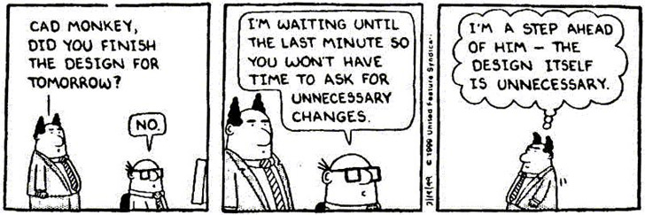

Using Machine Learning for Mechanical Design
knitr::include_graphics('img/evolution-of-design.jpg')
Keywords
mechanical design, computer aided design, CAD, machine learning, classification learning, neural networks
The (Non)Software Engineer
In many ways, mechanical engineers are just glorified jigsaw puzzle solvers. Their job is to take from a virtually infinite number of puzzle pieces and put them together in a functional and cost-effective way–often times having to craft missing pieces from scratch. However, puzzle pieces all look relatively similar. It would be great if MEs had access to a repository of known puzzle-piece shapes rather than having to create every one from scratch.
In modern companies, virtually all mechanical design work is done with computer aided design (CAD) software. Thus, physical objects are codified in digital files (see STL for example [@noauthor_stl_nodate]). In what Anderson calls the “Petabyte Age” [@anderson_end_2008], computing power is approaching the ability to train a neural network to recognize geometries from solid model files and classify them. If an algorithm notices that every “car” I design needs a component called a “door”, it can learn what a “door” is and propose a design for me. Time between concept and production falls precipitously, with fewer engineers required. The implications for business/engineering environments are huge.
The Paradigm Shift
To be clear, a machine learning algorithm is not a database of mechanical designs from which engineers select previously designed parts. The strength of ML lies not in its ability to regurgitate previous inputs, but rather in its ability to solve new problems. If the algorithm outputs a poor design, it can learn a better a solution. Once a neural net has seen enough examples of a particular geometry, it could even propose solutions that the engineer hadn’t even thought of. Maybe putting hinges at the top of the door actually makes more sense than putting them on the side (a la gull-wing doors on the Tesla). Maybe doors aren’t even necessary as originally thought.
knitr::include_graphics('img/dilbert_architect_comic_cad_monkey.jpg')
Of course, the neural net’s capabilities must grow over time, lest we attempt to build Rome in a day. I propose some checkpoints along the way:
- Component suggestion. The algorithm suggests previously designed components for use in the current design but actual implementation is left up to the engineer.
- Geometry suggestion. The algorithm suggests previously designed components as well as their geometry and layout in the current design.
- Design suggestion. The algorithm designs new geometry as a new solution for a specified problem.
Level 1 is barely starting to emerge in some CAD packages, showing that development has already started on what Fuge calls “Computation Design Synthesis” [@fuge_collaborative_2014]. The above description of level 3 suggestion may not have been very elucidating, but it is also the hardest one to encapsulate. The idea of “design suggestion” can be extended almost ad infinitum. It is perceivable (albeit far-fetched with contemporary technology) that this algorithm could advance one day to the point where an engineer can simply say, “design me an electric car,” and receive drawings for something akin to a Tesla.
Perhaps a more realistic goal is this: a paradigm shift from explicitly telling CAD software what to draw (dimensioned sketches followed by extrudes, revolves, and sweeps) to simply giving a top level goal and allowing the software to figure out the details. This is directly analogous to imperative versus functional programming languages.
Current mechanical design:
chair = EmptyPart()
chair.add(base)
chair.add(back)
for _ in range(4): chair.add(leg)
return chairDesigning with the new paradigm:
return create('chair', options={base:1, back:1, leg:4})Old Dogs, New Tricks
Adoption of such a new design paradigm into engineering workflow is a significant roadblock. The switching cost of just going from CAD package to CAD package is already high, requiring siginificant time become proficient at the new software. Many mechanical engineers are older (median age in the US is 42.2 [@noauthor_mechanical_nodate]) and, as an ME in a Silicon Valley tech company, I have witnessed first-hand how difficult it is to get MEs to use new software. It will be difficult to get engineers to detail their design intents not only to their managers but also to a computer–and the latter often requires more coddling.
In addition, there is a question of who deserves the credit for an algorithmic design. Is it the engineers who produced the inputs, the neural network designers, or the end user? Modern companies are already very tight-lipped about their proprietary designs; sharing across company borders may never happen. However, even for internal usage, adoption of ML based design greatly reduces the need to solve previous problems among engineers, speeding up development and decreasing costs.